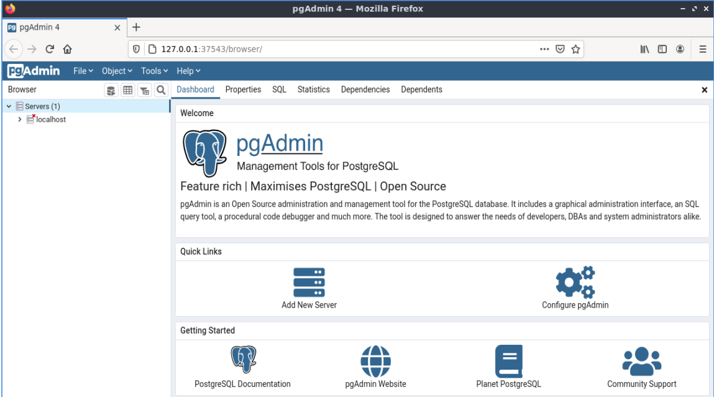

PostGIS pika-aloitus¶
PostGIS lisää spatiaaliset toiminallisuudet PostgreSQL-relaatiotietokantaan. Se laajentaa PostgreSQL:ää, jotta se pystyisi tallentamaan, kyselemään, ja manipuloimaan paikkatietoja. Tässä pika-aloituksessa käytämme ”PostgreSQL” kuvattaessa yleisiä tietokanta toimintoja, ja ”PostGIS” kuvattaessa spatiaalisia toiminnallisuuksia, jotka PostGIS tarjoaa.
Tämä Pika-aloitus kuvaa, miten:
- Luo ja Kysele paikkatietokantaa komentoriviltä ja QGIS graafisen käyttöliittymän omaavasta client-ohjelmistosta.
- Hallitse tietoja ”pgAdmin”-client-ohjelmistosta.
Contents
- Asiakas-palvelin-arkkitehtuuri
- Paikkatietoista tietokantaa käyttävän tietokannan luominen
- Creating a Spatial Table using SQL
- Yksinkertaiset kyselyt
- Paikkatietokyselyt
- Kartoitus
- Paikkatietojen tuominen tietokantaan
- Tutustu pgAdmin III:een
- Suoritetaan SQL-kysely sivulta pgAdmin III
- Get to know Foreign Data Wrappers (FDW)
- Connect to a remote OGR data source via ogr_fdw
- Kokeiltavaa:
- Mitä seuraavaksi?
Asiakas-palvelin-arkkitehtuuri¶
PostgreSQL, monien tietokantojen tapaan, toimii palvelimena asiakas-palvelin järjestelmässä. Asiakas tekee pyynnön palvelimelle ja saa takaisin vastauksen. Tämä mukailee tapaa, jolla Internet toimii - selaimesi on client-ohjelmisto ja palvelin lähettää takaisin verkkosivuston. PostgreSQL:n yhteydessä pyynnöt tehdään SQL-kielellä ja vastaus on yleensä tietokantataulukon muodossa.
Mikään ei estä asettamaan palvelinta olemasta samassa tietokoneessa kuin itse client-ohjelmisto. Näin voit käyttää PostgreSQL-ohjelmaa yksittäisessä koneessa. Client-ohjelmistosi muodostaa yhteyden palvelimeen sisäisen ”loopback”-verkkoyhteyden kautta, eikä se näy muille tietokoneille, ellet määritä sitä sellaiseksi.
Paikkatietoista tietokantaa käyttävän tietokannan luominen¶
Command-line clients run from within a Terminal Emulator window.
Start a Terminal Emulator (LXTerminal currently) from the Applications menu in the Accessories section. This gives you a Unix shell command prompt. Type:
psql -V
ja paina ENTER nähdäksesi PostgreSQL:n versionumero.
Yksittäinen PostgreSQL-palvelin mahdollistaa työskentelyn organisoimalla sen erillisiin tietokantoihin. Jokainen tietokanta on itsenäinen hallintojärjestelmä, jossa on omat taulukot, näkymät, käyttäjät ja niin edelleen. Muodostaessasi yhteyden PostgreSQL-palvelimeen, sinun on määritettävä tietokanta.
Voit saada luettelon tietokannoista palvelimella:
psql -l
komento. Sinun pitäisi nähdä useita tietokantoja, jotka ovat käytössä järjestelmässä joiden projektien toimesta. Luomme uuden kannan tämän pika-aloituksen kautta.
Vihje
Luettelo käyttää standardinomaisesti UNIX:ia - paina space-näppäintä päästäksesi seuraavalle sivulle,: KBD: ’ b ’ mennäksesi takaisin,: KBD: ’ q ’ lopettaaksesi, h löytääksesi apuja.
PostgreSQL antaa meille apuohjelman tietokantojen luomiseen, ’’ createdb ’’. Meidän on luotava tietokanta ennen kuin lisäämme PostGIS-laajennuksen. Tietokantaamme kutsumme nimellä ’’demo’’’. Komento on näin:
createdb demo
Vihje
Voit yleensä saada apuja ja lisätietoja komentorivityökalujen käyttämällä ’’–help’’ komentoa.
Jos nyt ajat komennon ’’psql -l’’ sinun pitäisi nähdä ’’demo’’-tietokanta listalla. Emme ole vielä lisänneet PostGIS laajennusta, mutta seuraavassa osiossa opit miten se tehdään.
Voit luoda PostGIS-tietokantoja käyttämällä SQL-kieltä. Ensin deletoimme tietokannan, jonka juuri loimme käyttäen dropdb-komentoa. Sitten käytä psql-komentoa saadaksesi SQL-komentorivisovelluksen auki:
dropdb demo
psql -d postgres
Tämä muodostaa yhteyden ydinjärjestelmän tietokantaan nimeltä ’’postgres’’. Nyt aja tarvittava SQL-komento luodaksesi uuden tietokannan:
postgres=# CREATE DATABASE demo;
Vaihda nyt yhteytesi postgres tietokannasta uuteen demo-tietokantaan. Tulevaisuudessa voit tehdä siihen suoraan yhteyden käyttämällä psql -d demo-komentoa, mutta siihen on myös näppärä tapa suoraan psql-komentoriviltä.
postgres=# \c demo
Vihje
Paina CTRL + C mikäli psql-prompt pysyy näkyvillä painettuasi Enter-näppäintä. Se tyhjentää syötteen ja aloittaa uudelleen. Se on luultavasti odottanut komennon sulkemiseen lainausmerkkiä, puolipistettä, tai jotain muuta merkkiä.
Nyt sinun pitäisi nähdä informatiivinen viesti ja komentorivityökaluun tulee näkymään, että olet nyt yhteydessä demo -tietokantaan.
Lisää seuraavaksi PostGIS-laajennus:
demo=# create extension postgis;
Voit varmistaa, että sinulla on nyt asennettuna PostGIS, suorittamalla seuraavan kyselyn:
demo=# SELECT postgis_version();
postgis_version
---------------------------------------
2.3 USE_GEOS=1 USE_PROJ=1 USE_STATS=1
(1 row)
PostGIS asentaa useita toimintoja, taulukon ja useita näkymiä
Voit listata tietokannan taulukot kirjoittamalla \dt. Sinun pitäisi nähdä jotain seuraavanlaista:
demo=# \dt
List of relations
Schema | Name | Type | Owner
--------+------------------+-------+-------
public | spatial_ref_sys | table | user
(1 row)
PostGIS käyttää ’’spatial_ref_sys’’ taulukkoa eri koordinaattijärjestelmien välisiin muunnoksiin. ’’Spatial_ref_sys’’-taulukkoon on tallennettu tietoja valideista koordinaattijärjestelmistä, ja voimme käyttää SQL-kieltä vilkaistaaksemme tietoihin:
demo=# SELECT srid, auth_name, proj4text FROM spatial_ref_sys LIMIT 10;
srid | auth_name | proj4text
------+-----------+--------------------------------------
3819 | EPSG | +proj=longlat +ellps=bessel +towgs...
3821 | EPSG | +proj=longlat +ellps=aust_SA +no_d...
3824 | EPSG | +proj=longlat +ellps=GRS80 +towgs8...
3889 | EPSG | +proj=longlat +ellps=GRS80 +towgs8...
3906 | EPSG | +proj=longlat +ellps=bessel +no_de...
4001 | EPSG | +proj=longlat +ellps=airy +no_defs...
4002 | EPSG | +proj=longlat +a=6377340.189 +b=63...
4003 | EPSG | +proj=longlat +ellps=aust_SA +no_d...
4004 | EPSG | +proj=longlat +ellps=bessel +no_de...
4005 | EPSG | +proj=longlat +a=6377492.018 +b=63...
(10 rows)
Tämä vahvistaa, että meillä on paikkatieotoja tukeva tietokanta.
Ottaessasi PostGIS-toiminnot käyttöösi tietokannassa huomaat tämän taulukon lisäksi useita muita näkymiä.
Kirjoita \dv, jos haluat luetella tietokannan näkymät. Sinun pitäisi nähdä jotain seuraavanlaista:
demo=# \dv
List of relations
Schema | Name | Type | Owner
--------+-------------------+------+----------
public | geography_columns | view | postgres
public | geometry_columns | view | postgres
public | raster_columns | view | postgres
public | raster_overviews | view | postgres
(4 rows)
PostGIS tukee useita paikkatietotyyppejä:
geometry on tietotyyppi, joka tallentaa vektoritietoja piirrettynä litteälle tasopinnalle (tasokoordinaattijärjestelmiä hyödyntäen).
geography - on tietotyyppi, joka tallentaa vektoritietoja piirrettynä pallopinnalle (maantieteelliset koordinaatit)
- ’rasteri’ - on tietotyyppi, joka tallentaa dataa n-ulotteisena matriisina, jossa kukin sijainti (pikseli) edustaa
- tiettyä aluetta maastossa, ja kullakin kaistalla (ulottuvuudella) on arvo kutakin pikseliä varten.
Näkymät ’’geometry_columns ’’, ’’geography_columns’’ ja ’’ raster_columns’’ kertovat PostGISille, mitkä taulukot omaavat paikkatietonsa PostGIS-geometry-, -geography- ja rasteri-sarakkeessa.
Ylikatsaukset ovat alemman tarkkuuden taulukkoja rasteritiedoille. raster_overviews listaa tällaiset taulukot sekä niiden rasterisarakkeet ja taulukot, joille yleiskatsaukset on tehty. Rasteri-yleiskatsaustaulukoita käyttävät työkalut, kuten QGIS, tarjotakseen alemman resoluution näkymiä rasteritietoihin nopeampaa aineistojen lataamista varten.
PostGISin geometry-tyyppi on ensimmäinen ja edelleen suosituin sekä käytetyin tyyppi PostGIS-käyttäjien keskuudessa. Keskitymmekin tähän tyyppiin.
Creating a Spatial Table using SQL¶
Nyt meillä on spatiaalinen tietokanta, jonka avulla voimme tehdä paikkatietoa sisältäviä tietokantatauluja.
Ensin luodaan tavallinen tietokantataulu, johon tallennetaan tietoja kaupungeista. Tässä taulukossa on kolme kenttää: yksi kaupungit yksilöivälle numeeriselle ID-tunnukselle, yksi kaupunkien nimille ja yksi geometria-sarakkeelle.
demo=# CREATE TABLE cities ( id int4 primary key, name varchar(50), geom geometry(POINT,4326) );
Conventionally this geometry column is named
geom (the older PostGIS convention was the_geom). This tells PostGIS what kind of geometry
each feature has (points, lines, polygons etc), how many dimensions
(in this case 2, if it had 3 or 4 dimensions we would use POINTZ, POINTM, or POINTZM), and the spatial reference
system. We used EPSG:4326 coordinates for our cities.
Tarkistaessasi nyt kaupungeista tehdyn tietokantataulun sinun pitäisi nähdä uusi sarake ja nähdä myös, että taulukossa ei tällä hetkellä ole rivejä.
demo=# SELECT * from cities;
id | name | geom
----+------+----------
(0 rows)
Jos haluat lisätä rivejä tauluun, käytämme joitain SQL-lauseita. Jos haluat saada geometria-tietoja geometria-sarakkeeseen, käytämme PostGISin ST_GeomFromText-funktiota muuntaaksemme geometriatiedon tekstimuotoisesta tiedosta, mikä antaa myös koordinaattijärjestelmän tiedot referenssi id:n kautta:
demo=# INSERT INTO cities (id, geom, name) VALUES (1,ST_GeomFromText('POINT(-0.1257 51.508)',4326),'London, England');
demo=# INSERT INTO cities (id, geom, name) VALUES (2,ST_GeomFromText('POINT(-81.233 42.983)',4326),'London, Ontario');
demo=# INSERT INTO cities (id, geom, name) VALUES (3,ST_GeomFromText('POINT(27.91162491 -33.01529)',4326),'East London,SA');
Vihje
Käytä nuolinäppäimiä käyttääksese komentoja uudelleen ja editoidaksesi niitä.
Kuten näette, toimista tulee verrattain hankalia nopeasti. PostGIS-tauluihin saa onneksi tietoja myös muilla tavoilla, jotka, jotka ovat paljon helpompaa. Mutta nyt meillä on kuitenkin kolme kaupunkia tietokannassamme, ja voimme aloittaa työskentelyn niillä.
Yksinkertaiset kyselyt¶
Kaikkia tavallisia SQL-operaatioita voidaan käyttää valitsemaan tietoja PostGIS-taulukosta:
demo=# SELECT * FROM cities;
id | name | geom
----+-----------------+----------------------------------------------------
1 | London, England | 0101000020E6100000BBB88D06F016C0BF1B2FDD2406C14940
2 | London, Ontario | 0101000020E6100000F4FDD478E94E54C0E7FBA9F1D27D4540
3 | East London,SA | 0101000020E610000040AB064060E93B4059FAD005F58140C0
(3 rows)
Tämä antaa meille koodatun heksadesimaaliversion koordinaateista, ei niin hyödyllinen ihmisille.
Jos haluat tarkastella uudelleen geometrioitasi WKT-muodossa, voit käyttää funktioita ST_AsText (geom) tai ST_AsEwkt (geom). Voit myös käyttää ST_X (geom), ST_Y (geom) saadaksesi koordinaatit numeerisessa muodossa:
demo=# SELECT id, ST_AsText(geom), ST_AsEwkt(geom), ST_X(geom), ST_Y(geom) FROM cities;
id | st_astext | st_asewkt | st_x | st_y
----+------------------------------+----------------------------------------+-------------+-----------
1 | POINT(-0.1257 51.508) | SRID=4326;POINT(-0.1257 51.508) | -0.1257 | 51.508
2 | POINT(-81.233 42.983) | SRID=4326;POINT(-81.233 42.983) | -81.233 | 42.983
3 | POINT(27.91162491 -33.01529) | SRID=4326;POINT(27.91162491 -33.01529) | 27.91162491 | -33.01529
(3 rows)
Paikkatietokyselyt¶
PostGIS adds many functions with spatial functionality to PostgreSQL. We’ve already seen ST_GeomFromText which converts WKT to geometry. Most of them start with ST (for spatial type) and are listed in a section of the PostGIS documentation. We’ll now use one to answer a practical question - how far are these three Londons away from each other, in metres, assuming a spherical earth?
demo=# SELECT p1.name,p2.name,ST_DistanceSphere(p1.geom,p2.geom) FROM cities AS p1, cities AS p2 WHERE p1.id > p2.id;
name | name | st_distancesphere
-----------------+-----------------+--------------------
London, Ontario | London, England | 5875766.85191657
East London,SA | London, England | 9789646.96784908
East London,SA | London, Ontario | 13892160.9525778
(3 rows)
This gives us the distance, in metres, between each pair of cities. Notice how the ’WHERE’ part of the line stops us getting back distances of a city to itself (which will all be zero) or the reverse distances to the ones in the table above (London, England to London, Ontario is the same distance as London, Ontario to London, England). Try it without the ’WHERE’ part and see what happens.
We can also compute the distance using a spheroid by using a different function and specifying the spheroid name, semi-major axis and inverse flattening parameters:
demo=# SELECT p1.name,p2.name,ST_DistanceSpheroid(
p1.geom,p2.geom, 'SPHEROID["GRS_1980",6378137,298.257222]'
)
FROM cities AS p1, cities AS p2 WHERE p1.id > p2.id;
name | name | st_distancespheroid
-----------------+-----------------+----------------------
London, Ontario | London, England | 5892413.63776489
East London,SA | London, England | 9756842.65711931
East London,SA | London, Ontario | 13884149.4140698
(3 rows)
Voit lopettaa PostgreSQL-komentorivin kirjoittamalla:
\q
Olet nyt takaisin järjestelmäkonsoliin:
user@osgeolive:~$
Kartoitus¶
To produce a map from PostGIS data, you need a client that can get at the data. Most of the open source desktop GIS programs can do this - QGIS, gvSIG, uDig for example. Now we’ll show you how to make a map from QGIS.
Start QGIS from the Desktop GIS menu and choose Add PostGIS layers from the layer menu. The
parameters for connecting to the Natural Earth data in PostGIS are already defined in the Connections
drop-down menu. You can define new server connections here, and store the settings for easy
recall. Click on Connections drop down menu and choose Natural Earth. Hit Edit if you want to see what those parameters are for Natural Earth, or just
hit Connect to continue:

Saat nyt listan spatiaalisista tauluista tietokannassa:

Choose the ne_10m_lakes table and hit Add at the bottom (not Load at the
top - that loads database connection parameters), and it should be
loaded into QGIS:

You should now see a map of the lakes. QGIS doesn’t know they are lakes, so might not colour them blue for you - use the QGIS documentation to work out how to change this. Zoom in to a famous group of lakes in Canada.
Paikkatietojen tuominen tietokantaan¶
Most of the OSGeo desktop tools have functions for importing spatial data from other formats (f.e. ESRI Shape) into the database. Again we’ll use QGIS to show this.
Importing shapefiles to QGIS can be done via the handy QGIS Database Manager. You find the manager in the menu. Go to Database -> DB Manager -> DB Manager.
Deploys the Postgis item, then the NaturalEarth item. It will then connect to the Natural Earth database. Leave the password blank if it asks. In the public item, there is the list of the layers provided by the database. You’ll see the main manager window. On the left you can select tables from the database and use the tabs on the right find out about them. The Preview tab will show you a little map.

We will now use the DB Manager to import a shapefile into the database. We’ll use the North Carolina sudden infant death syndrome (SIDS) data that is included with one of the R statistics package add-ons.
From the Table menu choose the Import layer/file option.
Hit the ... button and browse to the sids.shp shapefile in the R maptools package
(located in /usr/local/lib/R/site-library/spData/shapes):

Jätä kaikki muu kuin se on ja paina Load

Let the Coordinate Reference System Selector default to (WGS 84 EPSG:4326) and hit OK. The shapefile should be imported into PostGIS with no errors. Close the PostGIS manager and
get back to the main QGIS window.
Now load the SIDS data into the map using the ’Add PostGIS Layer’ option. With a bit of rearranging of the layers and some colouring, you should be able to produce a choropleth map of the sudden infant death syndrome counts (sid74 or sid79 fields) in North Carolina:

Tutustu pgAdmin III:een¶
You can use the graphical database client pgAdmin III from the Databases menu to query and modify your database non-spatially. This is the official client for PostgreSQL.
Vihje
Please note that there is a new version of pgAdmin called pgAdmin4 that can get installed via apt install pgadmin4
pgAdmin III lets you use SQL to manipulate your data tables. You can find and launch pgAdmin III from the Databases folder, existing on the OSGeoLive Desktop.
{kind=link}
Nyt sinulla on mahdollisuus luoda uusi yhteys PostgreSQL palvelimeen, tai yhdistää olemassa olevaan palvelimeen. Tässä tapauksessa yhdistämme etukäteen määriteltyyn ”paikalliseen” palvelimeen.
After connection established, you can see the list of the databases already existing in the system.

The red ”X” on the image of most of the databases, denotes that you haven’t been yet connected to any of them (you are connected only
to the default postgres database).
At this point you are able only to see the existing databases on the system. You can connect, by double clicking,
on the name of a database. Do it for the natural_earth2 database.
You can see now that the red X disappeared and a ”+” appeared on the left. By pressing it a tree is going to appear, displaying the contents of the database.
Navigate at the schemas subtree, expand it. Afterwards expand the
public schema. By navigating and expanding the
Tables, you can see all the tables contained within this schema.

Suoritetaan SQL-kysely sivulta pgAdmin III¶
pgAdmin III, tarjoaa mahdollisuuden suorittaa kyselyjä relaatiotietokantaan.
To perform a query on the database, you have to press the SQL button from the main toolbar (the one with the
yellow Magnifying lens).
We are going to find the rate of the SIDS over the births for the 1974 for each city. Furthermore we are going to sort the result, based on the computed rate. To do that, we need to perform the following query (submit it on the text editor of the SQL Window):
select name, 1000*sid74/bir74 as rate from sids order by rate;
Afterwards, you should press the green arrow button, pointing to the right (execute query).

Get to know Foreign Data Wrappers (FDW)¶
From you database you can access remote objects like tables from other PostgreSQL databases or connect to remote databases like Oracle, MySQL, MS SQL or CouchDB. You also can connect via ODBC, connect to CSV, Geospatial Data and even to twitter.
You find a list of different FDW at:
Let’s see how it works! The easiest way is to connect to a different PostgreSQL database.
Here are the steps:
First load the extension for the Foreign Data Wrapper that you want to use. For a connection to a different PostgreSQL database you need postgres_fdw
CREATE EXTENSION postgres_fdw;
Vihje
Please note that in pgAdmin III the foreign data wrappers, foreign servers, user mappings and foreign tables are not displayed by default in the tree. You have to activate them via menu via
Create a foreign Server that tells you where to find the data source that you want to connect
CREATE SERVER fdw_pg_server_osm_local
FOREIGN DATA WRAPPER postgres_fdw
OPTIONS (host '127.0.0.1', port '5432', dbname 'osm_local');
Define the user that should be used when you connect to the foreign server
CREATE USER MAPPING FOR user
SERVER fdw_pg_server_osm_local
OPTIONS (user 'user', password 'user');
Now you can create a foreign table.
IMPORT FOREIGN SCHEMA public
LIMIT TO (planet_osm_polygon, planet_osm_point) -- or EXCEPT
FROM SERVER fdw_pg_server_osm_local
INTO public;
Find new tables in your database and have a look at the data from a foreign table.
Select * from planet_osm_polygon limit 10;
Connect to a remote OGR data source via ogr_fdw¶
The extension ogr_fdw allows connection too several geodata formats like KML,
GeoPackage, WFS, GeoJSON, GPX, GML and more.
Read more about ogr_fdw:
* Repository: https://github.com/pramsey/pgsql-ogr-fdw
* New and improved: http://blog.cleverelephant.ca/2016/04/ogr-fdw-update.html
Install the extension ogr_fdw in your database.
On the database prompt type:
CREATE EXTENSION ogr_fdw;
Inspect which formats are supported:
Open a terminal and search for ogr_fdw_info:
locate ogr_fdw_info
/usr/lib/postgresql/10/bin/ogr_fdw_info -f
Results might look like these:
Supported Formats:
-> "OGR_GRASS" (readonly)
-> "PCIDSK" (read/write)
-> "netCDF" (read/write)
-> "JP2OpenJPEG" (readonly)
-> "PDF" (read/write)
-> "MBTiles" (read/write)
-> "EEDA" (readonly)
-> "ESRI Shapefile" (read/write)
-> "MapInfo File" (read/write)
.... many more
Create a FDW to a WFS
Start Geoserver via
- Open GeoServer http://localhost:8082/geoserver/web/
- GeoServer WFS GetCapabilities http://localhost:8082/geoserver/ows?service=wfs&version=2.0.0&request=GetCapabilities
- GeoServer WFS DescribeFeatureType for topp:states http://localhost:8082/geoserver/ows?service=wfs&version=2.0.0&request=DescribeFeatureType&typename=topp:states
- GeoServer WFS GetFeature topp:states http://localhost:8082/geoserver/ows?service=wfs&version=2.0.0&request=GetFeature&typename=topp:states
Create a foreign server that refers to the WFS that you want to connect
CREATE SERVER fdw_ogr_server_wfs
FOREIGN DATA WRAPPER ogr_fdw
OPTIONS ( datasource 'WFS:http://localhost:8082/geoserver/ows', format 'WFS' );
Import all WFS feature_types as foreign tables with one command.
After the import you will see several new foreign tables in your schema.
IMPORT FOREIGN SCHEMA ogr_all
FROM SERVER fdw_ogr_server_wfs
INTO public;
Inspect the foreign data table topp_states:
SELECT * FROM topp_states WHERE state_name = 'Minnesota';
Kokeiltavaa:¶
Seuraavassa on joitakin muita haasteita, joita voit kokeilla:
- Kokeile joitain enemmän tilatoimintoja, kuten``st_buffer(geom)``,
st_transform(geom,25831),st_x(geom)- löydät täydelliset ohjeet osoitteesta http://postgis.net/documentation/ - Export your tables to shapefiles with
pgsql2shpon the command line. - Try
ogr2ogron the command line to import/export data to your database. - Try to import data with
shp2pgsqlon the command line to your database. - Yritä tehdä tienreititys käyttämällä pgRouting.
Mitä seuraavaksi?¶
This is only the first step on the road to using PostGIS. There is a lot more functionality you can try.
- PostGIS-projektin koti - http://postgis.net
- PostGIS-dokumentaatio - http://postgis.net/documentation/